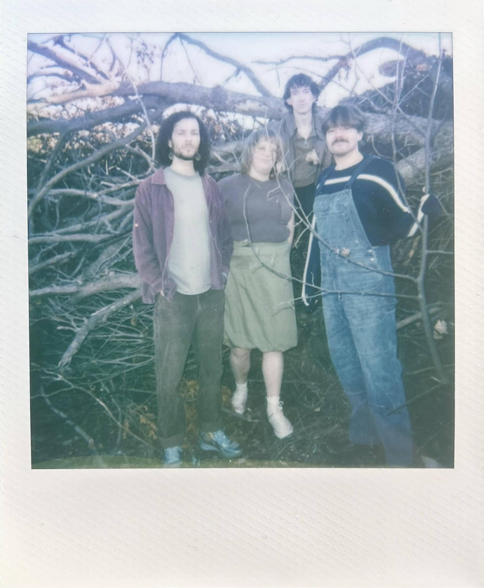

Flower Problem is a band from Chicago
Flower Problem is a band from Chicago

consisting of Cay Allan, Scott Daniel, Henry Geraghty, and Jonah Lazarus.
Their debut record, Trying to draw what I remember, will release in 2027.
~ ~ ~ ~ ~ ~ ~ ~ ~